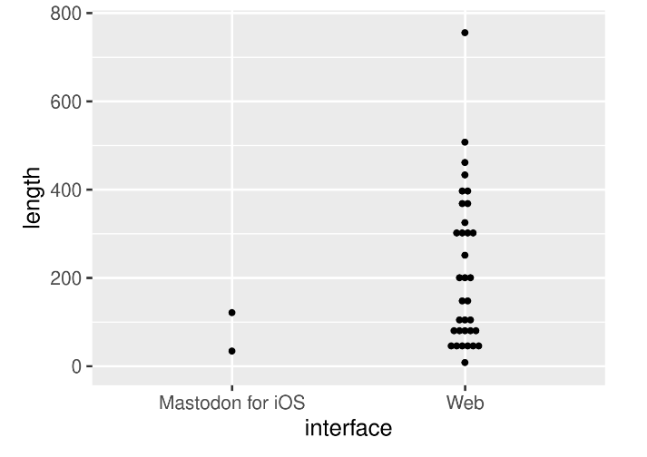
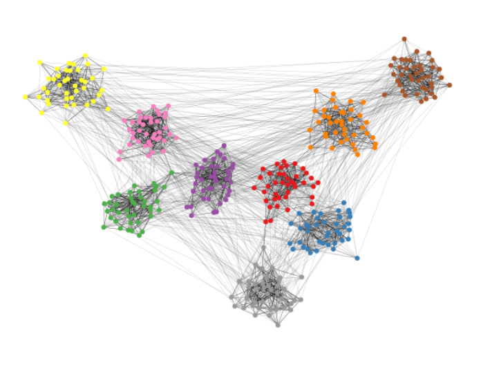

Publications
Blog
Projects
Material
About me
Publications
Penalty shootouts are tough, but the alternating order is fair
Silvan Vollmer and David Schoch and Ulrik Brandes
We compare conversion rates of association football (soccer) penalties during regulation or extra time with those during shootouts. Our data consists of roughly 50,000 penalties from the eleven~most recent seasons in European men’s football competitions
Oct 7, 2023
Computational Reproducibility in Computational Social Science
David Schoch and Chung-hong Chan and Claudia Wagner and Arnim Bleier
In the last decade, replication and reproducibility crises have shaken the scientific landscape. As potential solutions, open science practices were heavily discussed and have been implemented with varying success in different disciplines. We argue, however, that the binary definition of reproducibility, specifically for computational-X disciplines such as computational social science, is insufficient since it is not explicit about the agents and conditions under which results can be reproduced.
Jul 4, 2023
The interplay of structural features and observed dissimilarities among centrality indices
David Schoch and Termeh Shafie
An abundance of centrality indices has been proposed which capture the importance of nodes in a network based on different structural features. While there remains a persistent belief that similarities in outcomes of indices is contingent on their technical definitions, a growing body of research shows that structural features affect observed similarities more than technicalities.
Jul 1, 2023

Rtoot: Collecting and Analyzing Mastodon Data
David Schoch and Chung-hong Chan
An implementation of calls designed to collect and organize Mastodon data via its Application Program Interfaces (API)
May 31, 2023

graphlayouts: Layout algorithms for network visualizations in R
David Schoch
The package graphlayouts implements several state-of-the-art algorithms which are so far not available for R. This includes algorithms for large graphs, to emphasize hidden group structures, and important nodes within a network.
Apr 29, 2023
RANG: Reconstructing reproducible R computational environments
Chung-hong Chan and David Schoch
A complete declarative description of the computational environment is often missing when researchers share their materials. Without such description, software obsolescence and missing system components can jeopardize computational reproducibility in the future, even when data and computer code are available. The R package rang is a complete solution for generating the declarative description
Mar 8, 2023
signnet: An R package for analyzing signed networks
David Schoch
A signed network is a network where both, positive and negative relationships may occur. Common network analytic tools are not applicable to such networks without adapting for the existence of negative ties. The R package signnet brings together methods that have been developed to analyze signed networks
Jan 27, 2023
netrankr: An R package for total, partial, and probabilistic rankings in networks
David Schoch
One of the key concepts in network science is network centrality. Centrality seeks to provide the answer to the question of who (or what) is important in a network depending on the underlying process forming the network and the empirical phenomenon in question….
Sep 26, 2022
An extended family of measures for directed networks
Martin Everett & David Schoch
Centrality indices such as β-centrality, Katz status, and Hubbell’s index are commonly generalized to directed networks by relating the in-centrality of nodes to the in-centrality of their in-neighbors and equivalently so for out-centrality. This paper proposes an extension of Bonacich’s β-centrality…
Mar 27, 2022
Coordination patterns reveal online political astroturfing across the world
David Schoch, Franziska B Keller, Sebastian Stier & JungHwan Yang
Online political astroturfing—hidden information campaigns in which a political actor mimics genuine citizen behavior by incentivizing agents to spread information online—has become prevalent on social media. Such inauthentic information campaigns threaten to undermine the Internet’s promise to more equitable participation in public debates. We argue that the logic of social behavior within the campaign bureaucracy and principal–agent problems lead to detectable activity patterns among the campaign’s social media accounts…
Mar 17, 2022
Multiplexity analysis of networks using multigraph representations
Termeh Shafie & David Schoch
Multivariate networks comprising several compositional and structural variables can be represented as multigraphs by various forms of aggregations based on vertex attributes. We propose a framework to perform exploratory and confirmatory multiplexity analysis of aggregated multigraphs in order to find relevant associations between vertex and edge attributes…
Sep 30, 2021
Legislators’ roll-call voting behavior increasingly corresponds to intervals in the political spectrum
David Schoch & Ulrik Brandes
Scaling techniques such as the well known NOMINATE position political actors in a low dimensional space to represent the similarity or dissimilarity of their political orientation based on roll-call voting patterns. Starting from the same kind of data we propose an alternative, discrete, representation that replaces positions (points and distances) with niches (boxes and overlap)…
Oct 15, 2020
Projecting Signed Two-Mode Networks
David Schoch
Signed two-mode networks have so far predominantly been analysed using blockmodeling techniques. In this work, we put forward the idea of projecting such networks onto its modes. Two projection methods are introduced which allow the application of known dichotomization tool for weighted networks to obtain a simple signed network…
Jan 10, 2020
Political Astroturfing around the world
Franziska B Keller, David Schoch, Sebastian Stier & JungHwan Yang
Comparison of 8 disinformation campaigns on twitter
Aug 26, 2019
Political Astroturfing on Twitter: How to Coordinate a Disinformation Campaign
Franziska B Keller, David Schoch, Sebastian Stier & JungHwan Yang
Political astroturfing, a centrally coordinated disinformation campaign in which participants pretend to be ordinary citizens acting independently, has the potential to influence electoral outcomes and other forms of political behavior. Yet, it is hard to evaluate the scope and effectiveness of political astroturfing without ground truth information, such as the verified identity of its agents and instigators. In this paper, we study the South Korean National Information Service’s (NIS) disinformation campaign during the presidential election in 2012…
Jul 28, 2019
What do centrality measures measure in psychological networks?
Laura F Bringmann, Timon Elmer, Sacha Epskamp, Robert W Krause, David Schoch, Marieke Wichers, Johanna TW Wigman & Eveline Snippe
Centrality indices are a popular tool to analyze structural aspects of psychological networks. As centrality indices were originally developed in the context of social networks, it is unclear to what extent these indices are suitable in a psychological network context. In this article we critically examine several issues with the use of the most popular centrality indices in psychological networks…
Jul 27, 2019
Social Stratification from Networks of Leveling Ties
David Schoch & Ulrik Brandes
Social networks can be made of various kinds of ties, but (often implicit) assumptions embodied in network-analytic tools do not necessarily apply to all of them. Centrality indices, or instance, build on the assumption that it is always beneficial to add more ties. While it has been noted that networks of ties with a negative sentiment require different concepts of centrality…
Dec 14, 2018
Centrality without indices: Partial rankings and rank probabilities in networks
David Schoch
We present an alternative approach to assess centrality in networks which does not rely on traditional indices. The work is based on neighborhood-inclusion, a partial ranking inducing relation of nodes, which was shown to be preserved by many existing centrality indices. As such, it can serve as the shared basis for centrality in networks…
Jan 3, 2018
Hypergraph Representations: A Study of Carib Attacks on Colonial Forces, 1509-1700
Termeh Shafie, David Schoch Jimmy Mans, Corinne Hofman & Ulrik Brandes
Network data consisting of recorded historical events can be represented as hypergraphs where the ties or events can connect any number of nodes or event related attributes. In this paper, we perform a centrality analysis of a directed hypergraph representing attacks by indigenous peoples from the Lesser Antilles on European colonial settlements, 1509–1700…
Nov 1, 2017
Correlations among centrality indices and a class of uniquely ranked graphs
David Schoch, Thomas Valente & Ulrik Brandes
Various centrality indices have been proposed to capture different aspects of structural importance but relations among them are largely unexplained. The most common strategy appears to be the pairwise comparison of centrality indices via correlation. While correlation between centralities is often read as an inherent property of the indices, we argue that it is confounded by network structure in a systematic way…
Jul 15, 2017
How to Manipulate Social Media: Analyzing Political Astroturfing Using Ground Truth Data from South Korea
Franziska B Keller, David Schoch, Sebastian Stier & JungHwan Yang
This project investigates political astroturfing, i.e. hidden propaganda by powerful political actors aimed at mimicking grassroots activity, on social media. We focus on Twitter accounts used by the South Korean secret service to influence the 2012 presidential elections in favor of the eventual winner, Park Geun-hye…
May 3, 2017
Re-conceptualizing centrality in social networks
David Schoch & Ulrik Brandes
In the social sciences, networks are used to represent relationships between social actors, be they individuals or aggregates. The structural importance of these actors is assessed in terms of centrality indices which are commonly defined as graph invariants. Many such indices have been proposed, but there is no unifying theory of centrality. Previous attempts at axiomatic characterization have been focused on particular indices, and the conceptual frameworks that have been proposed alternatively do not lend themselves to mathematical treatment…
Dec 15, 2016
Centrality as a Predictor of Lethal Proteins: Performance and Robustness
David Schoch & Ulrik Brandes
The Centrality-Lethality Hypothesis states that proteins with a higher degree centrality are more likely to be lethal, i.e. proteins involved in more interactions are more likely to cause death when knocked off. This proposition gave rise to several new investigations in which stronger associations were obtained for other centrality measures. Most of this previous work focused on the well known protein-interaction network of Saccharomyces cerevisiae…
Dec 29, 2014
No matching items